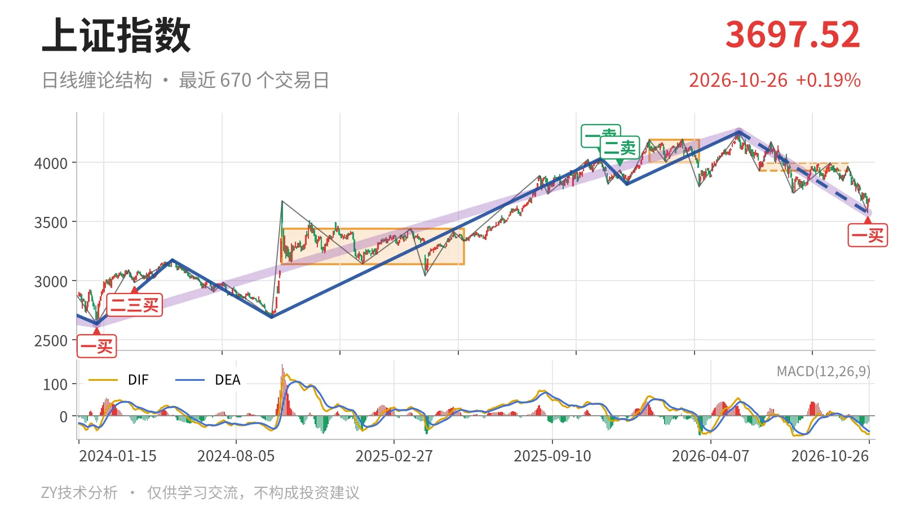
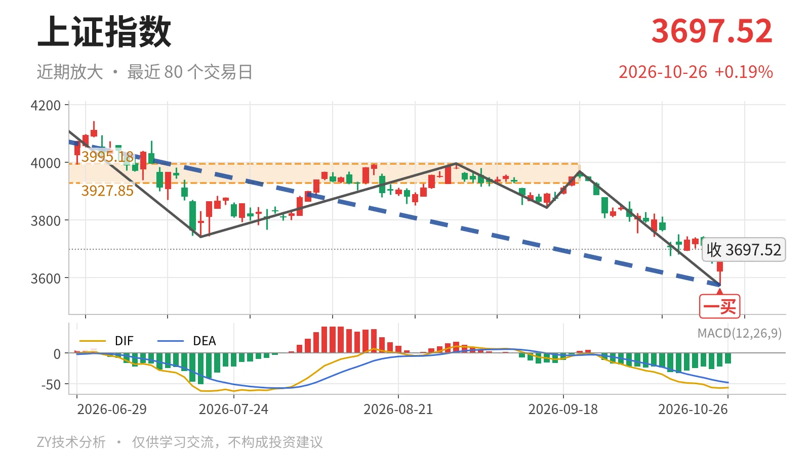

上证指数｜跌破中枢下沿，3928点成反抽关键

最近日线中枢 3927.85—3995.18点，收盘位于中枢之下
一句话：跌破日线中枢，下跌线段未结束，反抽先看3928点。
📉 走势结构：大级别上涨仍在，日线处下跌线段
当前处于大级别上涨中的同级别回撤，日线仍在下跌线段里。2024年2月5日至2026年5月14日上涨走势仍在延续，但5月14日至10月23日下跌走势也没有结束。日线线段上，5月14日至10月23日下跌线段没有结束，已含7笔，从4258.86点跌至3574.27点，跌16.1%。10月26日最新收盘3697.52点只是线段内的一根反抽K线，尚未构成新笔，因此不是中枢震荡。

🧭 中枢与位置：跌破下沿，中枢下移
最新价已经跌破最近日线笔中枢下沿，中枢下移。最近日线笔中枢6月8日至9月22日区间3927.85—3995.18点，本身尚未完成；最新收盘低于下沿约5.9%。此前1月14日至3月23日中枢4002.78—4190.87点，两段中枢比较下移明显。更大级别线段中枢2021年7月28日至2023年5月9日区间3312.72—3418.95点，最新收盘仍在其上方约8.2%，大级别重心未坏，但日线结构已转为中枢下方运行。
🎯 买卖点：一买只限笔级别
10月23日一买只是日线笔级别买点，还不能终结下跌线段。10月23日3574.27点列为日线笔级别一买，所在9月22日至10月23日下跌笔已经结束。10月26日最高3699.01点、最低3664.82点，只有一根K线，既未成笔，也未回到最近中枢下沿3927.85点。因此，这个一买目前只对应日线笔级别反抽，若后续反抽无法升级，它不会改变5月14日以来的下跌线段。

⚖️ 背驰：DIF未新低，面积未收缩
这组下跌笔出现新低不新弱，但绿柱面积未收缩。比较6月23日至7月20日与9月22日至10月23日两段日线下跌笔，价格从3741.11点到3574.27点创了新低，DIF低点却由-61.8抬升至-57.1，属于新低不新弱；绿柱面积347大于前一次289，面积没有缩小，向下动能未明显衰减。最新DIF -56.5仍在零轴下，DEA -48.2，柱-16.6，空头主导未改，因此这个一买不是标准双收缩背驰。
🧿 关键位置观察：反抽不过3928点将构成三卖
反抽的第一路标是3928点附近。上方先看最近中枢下沿3927.85点；若后续反弹成笔但回不到3928点上方，结构上容易构成三卖，后面会再试3574点一线。若重新站上3928点并回试不破，则下跌更可能只是中枢扩展。下方3574点附近是10月23日一买端点，若失守，该一买被破坏，下跌线段继续延伸。当前结构偏弱：价在中枢下方、DIF零轴下、反弹未成笔。
⚠️ 本文为基于公开行情数据的缠论技术结构记录，由程序自动计算并生成，仅供学习交流，不构成任何投资建议。市场有风险，投资需谨慎。